토목기사 (2019-03-03 기출문제)
1과목: 응용역학
1. 아래 그림과 같은 기둥에서 좌굴하중의 비 (a) : (b) : (c) : (d)는? (단, EI와 기둥의 길이(ℓ)는 모두 같다.)
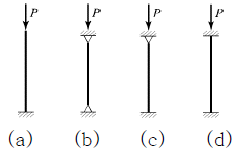
- 1 : 2 : 3 : 4
- 1 : 4 : 8 : 12
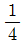
: 2 : 4 : 8- 1 : 4 : 8 : 16
(정답률: 83%)

2. 양단 고정보에 등분포 하중이 작용할 때 A점에 발생하는 휨 모멘트는?
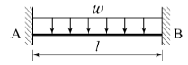
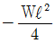
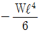
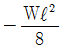
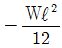
(정답률: 52%)
3. 직사각형 단면 보의 단면적을 A, 전단력을 V라고 할 때 최대 전단응력 τmax은?
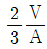
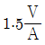
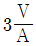
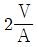
(정답률: 75%)
4. 지름이 d인 원형 단면의 회전반경은?
- d/2
- d/3
- d/4
- d/8
(정답률: 78%)
5. 단주에서 단면의 핵이란 기둥에서 인장응력이 발생되지 않도록 재하되는 편심거리로 정의된다. 지름 40cm인 원형단면의 핵의 지름은?
- 2.5cm
- 5.0cm
- 7.5cm
- 10.0cm
(정답률: 64%)
6. 각 변의 길이가 a로 동일한 그림 A, B 단면의 성질에 관한 내용으로 옳은 것은?
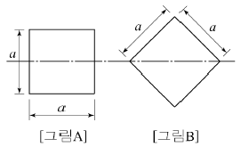
- 그림 A는 그림 B보다 단면계수는 작고, 단면 2차 모멘트는 크다.
- 그림 A는 그림 B보다 단면계수는 크고, 단면 2차 모멘트는 작다.
- 그림 A는 그림 B보다 단면계수는 크고, 단면 2차 모멘트는 같다.
- 그림 A는 그림 B보다 단면계수는 작고, 단면 2차 모멘트는 같다.
(정답률: 64%)
7. 그림과 같은 내민보에서 자유단의 처짐은? (단, EI = 3.2 × 1011kg·cm2)
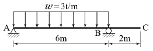
- 0.169cm
- 16.9cm
- 0.338cm
- 33.8cm
(정답률: 51%)
8. 다음 그림과 같은 구조물에서 C점의 수직처짐은? (단, AC 및 BC 부재의 길이는 L, 단면적은 A, 탄성계수는 E이다.)
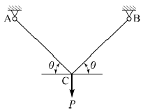
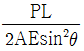
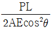
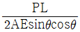
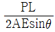
(정답률: 53%)
9. 다음에서 부재 BC에 걸리는 응력의 크기는?
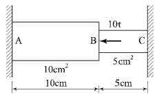
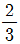
t/cm2- 1 t/cm2
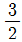
t/cm2- 2 t/cm2
(정답률: 60%)
10. 그림과 같이 단순보에 이동하중이 재하될 때 절대 최대 모멘트는 약 얼마인가?
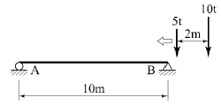
- 33t·m
- 35t·m
- 37t·m
- 39t·m
(정답률: 65%)
11. 주어진 보에서 지점 A의 휨모멘트(MA) 및 반력(RA)의 크기로 옳은 것은?
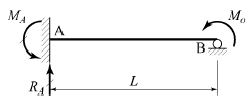
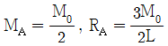
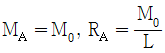
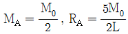
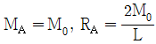
(정답률: 70%)
12. 다음 정정보에서의 전단력도(SFD)로 옳은 것은?
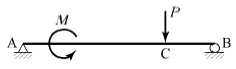
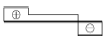
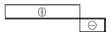
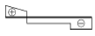
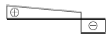
(정답률: 76%)
13. 다음 중 단위 변형을 일으키는데 필요한 힘은?
- 강성도
- 유연도
- 축강도
- 프아송비
(정답률: 64%)
14. 탄성계수가 2.0 × 106 kg/cm2인 재료로 된 경간 10m의 켄틸레버 보에 W=120kg/m의 등분포하중이 작용할 때, 자유단의 처짐각은? (단, IN : 중립축에 관한 단면 2차 모멘트)
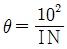
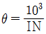
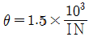
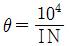
(정답률: 48%)
15. 다음 라멘의 수직반력 RB는?
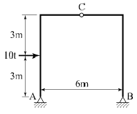
- 2t
- 3t
- 4t
- 5t
(정답률: 74%)
16. 분포하중(W), 전단력(S) 및 굽힘 모멘트(M) 사이의 관계가 옳은 것은?
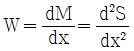
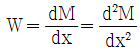
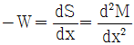
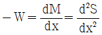
(정답률: 63%)
17. 다음 그림과 같은 보에서 C점의 휨 모멘트는?
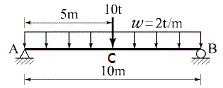
- 0 t·m
- 40 t·m
- 45 t·m
- 50 t·m
(정답률: 63%)
18. 아래에서 설명하는 정리는?
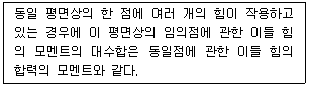
- Lami의 정리
- Green의 정리
- Pappus의 정리
- Varignon의 정리
(정답률: 80%)
19. 그림과 같은 트러스에서 부재 U의 부재력은?
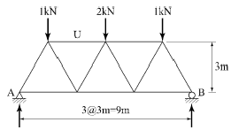
- 1.0kN(압축)
- 1.2kN(압축)
- 1.3kN(압축)
- 1.5kN(압축)
(정답률: 73%)
20. 20cm × 30cm인 단면의 저항 모멘트는? (단, 재료의 허용 휨 응력은 70kg/cm2이다.)
- 2.1 t·m
- 3.0 t·m
- 4.5 t·m
- 6.0 t·m
(정답률: 56%)
2과목: 측량학
21. 항공사진의 주점에 대한 설명으로 옳지 않은 것은?
- 주점에서는 경사사진의 경우에도 경사각에 관계없이 수직사진의 축척과 같은 축척이 된다.
- 인접사진과의 주점길이가 과고감에 영향을 미친다.
- 주점은 사진의 중심으로 경사사진에서는 연직점과 일치하지 않는다.
- 주점은 연직점, 등각점과 함께 항공사진의 특수3점이다.
(정답률: 49%)
22. 철도의 궤도간격 b=1.067m, 곡선반지름 R=600m인 원곡선 상을 열차가 100km/h로 주행하려고 할 때 캔트는?
- 100mm
- 140mm
- 180mm
- 220mm
(정답률: 59%)
23. 교각(I) 60°, 외선 길이(E) 15m인 단곡선을 설치할 때 곡선길이는?
- 85.2m
- 91.3m
- 97.0m
- 101.5m
(정답률: 55%)
24. 수준측량에서 발생하는 오차에 대한 설명으로 틀린 것은?
- 기계의 조정에 의해 발생하는 오차는 전시와 후시의 거리를 같게 하여 소거할 수 있다.
- 표척의 영눈금 오차는 출발점의 표척을 도착점에서 사용하여 소거할 수 있다.
- 측지삼각수준측량에서 곡률오차와 굴절오차는 그 양이 미소하므로 무시할 수 있다.
- 기포의 수평조정이나 표척면의 읽기는 육안으로 한계가 있으나 이로 인한 오차는 일반적으로 허용오차 범위 안에 들 수 있다.
(정답률: 68%)
25. 일반적으로 단열삼각망으로 구성하기에 가장 적합한 것은?
- 시가지와 같이 정밀을 요하는 골조측량
- 복잡한 지형의 골조측량
- 광대한 지역의 지형측량
- 하천조사를 위한 골조측량
(정답률: 64%)
26. 삼각측량의 각 삼각점에 있어 모든 각의 관측시 만족되어야 하는 조건이 아닌 것은?
- 하나의 측점을 둘러싸고 있는 각의 합은 360°가 되어야 한다.
- 삼각망 중에서 임의의 한 변의 길이는 계산의 순서에 관계없이 같아야 한다.
- 삼각망 중 각각 삼각형 내각의 합은 180°가 되어야 한다.
- 모든 삼각점의 포함면적은 각각 일정하여야 한다.
(정답률: 58%)
27. 초점거리 20cm의 카메라로 평지로부터 6000m의 촬영고도로 찍은 연직 사진이 있다. 이 사진에 찍혀 있는 평균 표고 500m인 지형의 사진 축척은?
- 1 : 5000
- 1 : 27500
- 1 : 29750
- 1 : 30000
(정답률: 59%)
28. 수준측량의 야장 기입법에 관한 설명으로 옳지 않은 것은?
- 야장 기입법에는 고차식, 기고식, 승강식이 있다.
- 고차식은 단순히 출발점과 끝점의 표고차만 알고자 할 때 사용하는 방법이다.
- 기고식은 계산과정에서 완전한 검산이 가능하여 정밀한 측량에 적합한 방법이다.
- 승강식은 앞 측점의 지반고에 해당 측점의 승강을 합하여 지반고를 계산하는 방법이다.
(정답률: 64%)
29. 위성측량의 DOP(Dilution of Precision)에 관한 설명 중 옳지 않은 것은?
- 기하학적 DOP(GDOP), 3차원위치 DOP(PDOP), 수직위치 DOP(VDOP), 평면위치 DOP(HDOP), 시간 DOP(TDOP) 등이 있다.
- DOP는 측량할 때 수신 가능한 위성의 궤도정보를 항법메시지에서 받아 계산할 수 있다.
- 위성측량에서 DOP가 작으면 클 때보다 위성의 배치상태가 좋은 것이다.
- 3차원위치 DOP(PDOP)는 평면위치 DOP(HDOP)와 수직위치 DOP(VDOP)의 합으로 나타난다.
(정답률: 47%)
30. 완화곡선에 대한 설명으로 옳지 않은 것은?
- 곡선반지름은 완화곡선의 시점에서 무한대, 종점에서 원곡선의 반지름으로 된다.
- 완화곡선의 접선은 시점에서 직선에, 종점에서 원호에 접한다.
- 완화곡선에 연한 곡선반지름의 감소율은 캔트의 증가율의 2배가 된다.
- 완화곡선 종점의 캔트는 원곡선의 캔트와 같다.
(정답률: 60%)
31. 축척 1 : 500 지형도를 기초로 하여 축척 1 : 5000의 지형도를 같은 크기로 편찬하려 한다. 축척 1 : 5000 지형도의 1장을 만들기 위한 축척 1 : 500 지형도의 매수는?
- 50매
- 100매
- 150매
- 250매
(정답률: 71%)
32. 거리와 각을 동일한 정밀도로 관측하여 다각측량을 하려고 한다. 이때 각 측량기의 정밀도가 10″ 라면 거리측량기의 정밀도는 약 얼마 정도이어야 하는가?
- 1/15000
- 1/18000
- 1/21000
- 1/25000
(정답률: 64%)
33. 지오이드(Geoid)에 대한 설명으로 옳은 것은?
- 육지와 해양의 지형면을 말한다.
- 육지 및 해저의 요철(凹凸)을 평균한 매끈한 곡면이다.
- 회전타원체와 같은 것으로서 지구의 형상이 되는 곡면이다.
- 평균해수면을 육지내부까지 연장했을 때의 가상적인 곡면이다.
(정답률: 68%)
34. 평야지대에서 어느 한 측점에서 중간 장애물이 없는 26km 떨어진 측점을 시준할 때 측점에 세울 표척의 최소 높이는? (단, 굴절계수는 0.14이고 지구곡률반지름은 6370km 이다.)
- 16m
- 26m
- 36m
- 46m
(정답률: 54%)
35. 다각측량 결과 측점 A, B, C의 합위거, 합경거가 표와 같다면 삼각형 A, B, C의 면적은?
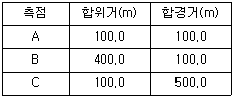
- 40000 m2
- 60000 m2
- 80000 m2
- 120000 m2
(정답률: 57%)
36. A, B, C 세 점에서 P점의 높이를 구하기 위해 직접수준측량을 실시하였다. A, B, C점에서 구한 P점의 높이는 각각 325.13m, 325.19m, 325.02m이고 AP=BP=1km, CP=3km일 때 P점의 표고는?
- 325.08m
- 325.11m
- 325.14m
- 325.21m
(정답률: 62%)
37. 비행장이나 운동장과 같이 넓은 지형의 정지공사시에 토량을 계산하고자 할 때 적당한 방법은?
- 점고법
- 등고선법
- 중앙단면법
- 양단면 평균법
(정답률: 65%)
38. 방위각 265°에 대한 측선의 방위는?
- S85°W
- E85°W
- N85°E
- E85°N
(정답률: 67%)
39. 100m2인 정사각형 토지의 면적을 0.1m2까지 정확하게 구현하고자 한다면 이에 필요한 거리관측의 정확도는?
- 1/2000
- 1/1000
- 1/500
- 1/300
(정답률: 58%)
40. 지형측량에서 지성선(地性線)에 대한 설명으로 옳은 것은?
- 등고선이 수목에 가려져 불명확할 때 이어주는 선을 의미한다.
- 지모(地貌)의 골격이 되는 선을 의미한다.
- 등고선에 직각방향으로 내려 그은 선을 의미한다.
- 곡선(谷線)이 합류되는 점들을 서로 연결한 선을 의미한다.
(정답률: 65%)
3과목: 수리학 및 수문학
41. 흐르지 않는 물에 잠긴 평판에 작용하는 전수압(全水壓)의 계산 방법으로 옳은 것은? (단, 여기서 수압이란 단위 면적당 압력을 의미)
- 평판도심의 수압에 평판면적을 곱한다.
- 단면의 상단과 하단 수압의 평균값에 평판면적을 곱한다.
- 작용하는 수압의 최대값에 평판면적을 곱한다.
- 평판의 상단에 작용하는 수압에 평판면적을 곱한다.
(정답률: 56%)
42. 직사각형 단면의 위어에서 수두(h) 측정에 2%의 오차가 발생했을 때, 유량(Q)에 발생되는 오차는?
- 1%
- 2%
- 3%
- 4%
(정답률: 65%)
43. 물체의 공기 중 무게가 750N이고 물속에서의 무게는 250N일 때 이 물체의 체적은? (단, 무게 1kg중=10N)
- 0.⑤ m3
- 0.06 m3
- 0.50 m3
- 0.60 m3
(정답률: 43%)
44. 그림과 같은 병열관수로 ㉠, ㉡, ㉢에서 각 관의 지름과 관의 길이를 각각 D1, D2, D3, L1, L2, L3 라 할 때 D1 ＞ D2 ＞ D3이고 L1 ＞ L2 ＞ L3 이면 A점과 B점 사이의 손실수두는?
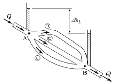
- ㉠의 손실수두가 가장 크다.
- ㉡의 손실수두가 가장 크다.
- ㉢에서만 손실수두가 발생한다.
- 모든 관의 손실수두가 같다.
(정답률: 71%)
45. 지름 200mm인 관로에 축소부 지름이 120mm인 벤츄리미터(venturimeter)가 부착되어 있다. 두 단면의 수두차가 1.0m, C=0.98일 때의 유량은?
- 0.0⑤25 m3/s
- 0.⑤25 m3/s
- 0.525 m3/s
- 5.250 m3/s
(정답률: 58%)
46. 수조의 수면에서 2m 아래 지점에 지름 10cm의 오리피스를 통하여 유출되는 유량은? (단, 유량계수 C = 0.6)
- 0.0152 m3/s
- 0.0068 m3/s
- 0.0295 m3/s
- 0.0094 m3/s
(정답률: 61%)
47. 유량 147.6L/s를 송수하기 위하여 안지름 0.4m의 관을 700m의 길이로 설치하였을 때 흐름의 에너지 경사는? (단, 조도계수 n=0.012, Manning 공식 적용)
- 1/700
- 2/700
- 3/700
- 4/700
(정답률: 55%)
48. 단위도(단위 유량도)에 대한 설명으로 옳지 않은 것은?
- 단위도의 3가지 가정은 일정기저시간 가정, 비례 가정, 중첩 가정이다.
- 단위도는 기저유량과 직접유출량을 포함하는 수문곡선이다.
- S-Curve를 이용하여 단위도의 단위시간을 변경할 수 있다.
- Snyder는 합성단위도법을 연구 발표하였다.
(정답률: 47%)
49. 지하수에서 Darcy 법칙의 유속에 대한 설명으로 옳은 것은?
- 영향권의 반지름에 비례한다.
- 동수경사에 비례한다.
- 동수반지름(hydraulic radius)에 비례한다.
- 수심에 비례한다.
(정답률: 64%)
50. 유출(runoff)에 대한 설명으로 옳지 않은 것은?
- 비가 오기 전의 유출을 기저유출이라 한다.
- 우량은 별도의 손실 없이 그 전량이 하천으로 유출된다.
- 일정기간에 하천으로 유출되는 수량의 합을 유출량이라 한다.
- 유출량과 그 기간의 강수량과의 비(比)를 유출계수 또는 유출률이라 한다.
(정답률: 68%)
51. 상류(subcritical flow)에 관한 설명으로 틀린 것은?
- 하천의 유속이 장파의 전파속도보다 느린 경우이다.
- 관성력이 중력의 영향보다 더 큰 흐름이다.
- 수심은 한계수심보다 크다.
- 유속은 한계유속보다 작다.
(정답률: 50%)
52. 그림과 같은 굴착정(artesian well)의 유량을 구하는 공식은? (단, R : 영향원의 반지름, K : 투수계수, m : 피압대수층의 두께)
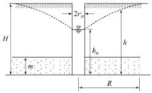
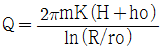
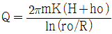
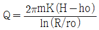
(정답률: 61%)
53. 개수로의 흐름에서 비에너지의 정의로 옳은 것은?
- 단위 중량의 물이 가지고 있는 에너지로 수심과 속도수두의 합
- 수로의 한 단면에서 물이 가지고 있는 에너지를 단면적으로 나눈 값
- 수로의 두 단면에서 물이 가지고 있는 에너지를 수심으로 나눈 값
- 압력 에너지와 속도 에너지의 비
(정답률: 55%)
54. 대규모 수송구조물의 설계우량으로 가장 적합한 것은?
- 평균면적우량
- 발생가능최대강수량(PMP)
- 기록상의 최대우량
- 재현기간 100년에 해당하는 강우량
(정답률: 61%)
55. 댐의 상류부에서 발생되는 수면 곡선으로 흐름 방향으로 수심이 증가함을 뜻하는 곡선은?
- 배수 곡선
- 저하 곡선
- 수리특성 곡선
- 유사량 곡선
(정답률: 68%)
56. 관속에 흐르는 물의 속도수두를 10m로 유지하기 위한 평균 유속은?
- 4.9m/s
- 9.8m/s
- 12.6m/s
- 14.0m/s
(정답률: 53%)
57. 층류와 난류(亂流)에 관한 설명으로 옳지 않은 것은?
- 층류란 유수(流水)중에서 유선이 평행한 층을 이루는 흐름이다.
- 층류와 난류를 레이놀즈 수에 의하여 구별할 수 있다.
- 원관 내 흐름의 한계 레이놀즈 수는 약 2000 정도이다.
- 층류에서 난류로 변할 때의 유속과 난류에서 층류로 변할 때의 유속은 같다.
(정답률: 65%)
58. 물리량의 차원이 옳지 않은 것은?
- 에너지 : [ML-2 T-2]
- 동점성계수 : [L2 T-1]
- 점성계수 : [ML-1 T-1]
- 밀도 : [FL-4 T2]
(정답률: 46%)
59. 수문에 관련한 용어에 대한 설명 중 옳지 않은 것은?
- 침투란 토양면을 통해 스며든 물이 중력에 의해 계속 지하로 이동하여 불투수층 까지 도달하는 것이다.
- 증산(transpiration)이란 식물의 옆면(葉面)을 통해 물이 수증기의 형태로 대기 중에 방출되는 현상이다.
- 강수(precipitation)란 구름이 응축되어 지상으로 떨어지는 모든 형태의 수분을 총칭한다.
- 증발이란 액체상태의 물이 기체상태의 수증기로 바뀌는 현상이다.
(정답률: 67%)
60. 개수로에서 한계수심에 대한 설명으로 옳은 것은?
- 사류 흐름의 수심
- 상류 흐름의 수심
- 비에너지가 최대일 때의 수심
- 비에너지가 최소일 때의 수심
(정답률: 50%)
4과목: 철근콘크리트 및 강구조
61. 다음 중 철근콘크리트 보에서 사인장철근이 부담하는 주된 응력은?
- 부착응력
- 전단응력
- 지압응력
- 휨인장응력
(정답률: 62%)
62. 그림과 같은 인장철근을 갖는 보의 유효 깊이는? (단, D19철근의 공칭단면적은 287mm2이다.)
- 350mm
- 410mm
- 440mm
- 500mm
(정답률: 47%)
63. 길이 6m의 단순지지 보통중량 철근콘크리트 보의 처짐을 계산하지 않아도 되는 보의 최소두께는? (단, fck=21MPa, fy=350MPa이다.)
- 349mm
- 356mm
- 375mm
- 403mm
(정답률: 52%)
64. 그림과 같은 캔틸레버 옹벽의 최대 지반 반력은?
- 10.2 t/m2
- 20.5 t/m2
- 6.67 t/m2
- 3.33 t/m2
(정답률: 46%)
65. 강도설계법에 의한 휨 부재의 등가사각형 압축응력 분포에서 fck=40MPa일 때 β1의 값은?
- 0.766
- 0.801
- 0.833
- 0.850
(정답률: 57%)
66. 그림과 같은 직사각형 단면의 프리텐션 부재에 편심배치한 직선 PS강재를 760kN 긴장했을 때 탄성수축으로 인한 프리스트레스의 감소량은? (단, I=2.5×109mm4, n=6이다.)
- 43.67 MPa
- 45.67 MPa
- 47.67 MPa
- 49.67 MPa
(정답률: 28%)
67. 표준갈고리를 갖는 인장 이형철근의 정착에 대한 설명으로 옳지 않은 것은? (단, db는 철근의 공칭지름이다.)
- 갈고리는 압축을 받는 경우 철근정착에 유효하지 않은 것으로 본다.
- 정착길이는 위험단면부터 갈고리의 외측단까지 길이로 나타낸다.
- fsp값이 규정되어 있지 않은 경우 모래경량콘크리트의 경량콘크리트계수 λ는 0.7이다.
- 기본 정착 길이에 보정계수를 곱하여 정착길이를 계산하는 데 이렇게 구한 정착길이는 항상 8db이상, 또한 150mm 이상이어야 한다.
(정답률: 51%)
68. 용접작업 중 일반적인 주의사항에 대한 내용으로 옳지 않은 것은?
- 구조상 중요한 부분을 지정하여 집중 용접한다.
- 용접은 수축이 큰 이음을 먼저 용접하고, 수축이 작은 이음은 나중에 한다.
- 앞의 용접에서 생긴 변형을 다음 용접에서 제거할 수 있도록 진행시킨다.
- 특히 비틀어지지 않게 평행한 용접은 같은 방향으로 할 수 있으며 동시에 용접을 한다.
(정답률: 50%)
69. 옹벽의 구조해석에 대한 내용으로 틀린 것은?
- 부벽식 옹벽의 전면벽은 3변 지지된 2방향 슬래브로 설계할 수 있다.
- 캔틸레버식 옹벽의 전면벽은 저판에 지지된 캔틸레버로 설계할 수 있다.
- 뒷부벽은 T형 보로 설계하여야 하며, 앞부벽은 직사각형 보로 설계하여야 한다.
- 부벽식 옹벽의 저판은 정밀한 해석이 사용되지 않는 한, 부벽의 높이를 경간으로 가정한 고정보 또는 연속보로 설계할 수 있다.
(정답률: 42%)
70. 아래와 같은 맞대기 이음부에 발생하는 응력의 크기는? (단, P=360kN, 강판두께=12mm)
- 압축응력 fc=14.4MPa
- 인장응력 ft=3000MPa
- 전단응력 τ=150MPa
- 압축응력 fc=120MPa
(정답률: 66%)
71. 단철근 직사각형 보의 설계휨강도를 구하는 식으로 옳은 것은? (단, 이다.)
(정답률: 52%)
72. 철근콘크리트 부재의 비틀림철근 상세에 대한 설명으로 틀린 것은? (단, Ph : 가장 바깥의 횡방향 폐쇄스터럽 중심선의 둘레(mm)이다.)
- 종방향 비틀림철근은 양단에 정착하여야 한다.
- 횡방향 비틀림철근의 간격은 Ph/4 보다 작아야 하고, 또한 200mm보다 작아야 한다.
- 종방향 철근의 지름은 스터럽 간격의 1/24 이상이어야 하며, 또한 D10 이상의 철근이어야 한다.
- 비틀림에 요구되는 종방향 철근은 폐쇄스터럽의 둘레를 따라 300mm 이하의 간격으로 분포시켜야 한다.
(정답률: 50%)
73. 철근 콘크리트에서 콘크리트의 탄성계수로 쓰이며, 철근 콘크리트 단면의 결정이나 응력을 계산할 때 쓰이는 것은?
- 전단 탄성계수
- 할선 탄성계수
- 접선 탄성계수
- 초기접선 탄성계수
(정답률: 50%)
74. 단철근 직사각형 보에서 폭 300mm, 유효깊이 500mm, 인장철근 단면적 1700mm2일 때 강도해석에 의한 직사각형 압축응력 분포도의 깊이(a)는? (단, fck=20MPa, fy=300MPa이다.)
- 50mm
- 100mm
- 200mm
- 400mm
(정답률: 63%)
75. 강도설계법에서 강도감소계수(ø)를 규정하는 목적이 아닌 것은?
- 부정확한 설계 방정식에 대비한 여유를 반영하기 위해
- 구조물에서 차지하는 부재의 중요도 등을 반영하기 위해
- 재료 강도와 치수가 변동할 수 있으므로 부재의 강도 저하 확률에 대비한 여유를 반영하기 위해
- 하중의 변경, 구조해석 할 때의 가정 및 계산의 단순화로 인해 야기될지 모르는 초과하중에 대비한 여유를 반영하기 위해
(정답률: 49%)
76. 그림과 같은 필렛 용접에서 일어나는 응력으로 옳은 것은?(문제 오류로 실제 시험에서는 모두 정답처리 되었습니다. 여기서는 1번을 누르면 정답 처리 됩니다.)
- 97.3 MPa
- 98.2 MPa
- 99.2 MPa
- 100.0 MPa
(정답률: 56%)
77. 다음 그림과 같은 직사각형 단면의 단순보에 PS강재가 포물선으로 배치되어 있다. 보의 중앙단면에서 일어나는 상연응력(㉠) 및 하연응력(㉡)은? (단, PS강재의 긴장력은 3300kN이고, 자중을 포함한 작용하중은 27kN/m이다.)
- ㉠ : 21.21 MPa, ㉡ : 1.8 MPa
- ㉠ : 12.07 MPa, ㉡ : 0 MPa
- ㉠ : 8.6 MPa, ㉡ : 2.45 MPa
- ㉠ : 11.11 MPa, ㉡ : 3.00 MPa
(정답률: 43%)
78. 캔틸레버식 옹벽(역 T형 옹벽)에서 뒷굽판의 길이를 결정할 때 가장 주가 되는 것은?
- 전도에 대한 안정
- 침하에 대한 안정
- 활동에 대한 안정
- 지반 지지력에 대한 안정
(정답률: 45%)
79. 콘크리트 슬래브 설계 시 직접설계법을 적용할 수 있는 제한사항에 대한 설명 중 틀린 것은?
- 각 방향으로 3경간 이상 연속되어야 한다.
- 각 방향으로 연속한 받침부 중심간 경간 차이는 긴 경간의 1/3 이하이어야 한다.
- 슬래브 판들은 단변 경간에 대한 장변 경간의 비가 2 이하인 직사각형이어야 한다.
- 연속한 기둥 중심선을 기준으로 기둥의 어긋남은 그 방향 경간의 15% 이하이어야 한다.
(정답률: 60%)
80. 철근콘크리트 구조물의 균열에 관한 설명으로 옳지 않은 것은?
- 하중으로 인한 균열의 최대폭은 철근 응력에 비례한다.
- 인장측에 철근을 잘 분배하면 균열폭을 최소로 할 수 있다.
- 콘크리트 표면의 균열폭은 철근에 대한 피복두께에 반비례한다.
- 많은 수의 미세한 균열보다는 폭이 큰 몇개의 균열이 내구성에 불리하다.
(정답률: 46%)
5과목: 토질 및 기초
81. 다음 중 Rankine 토압이론의 기본가정에 속하지 않는 것은?
- 흙은 비압축성이고 균질의 입자이다.
- 지표면은 무한히 넓게 존재한다.
- 옹벽과 흙과의 마찰을 고려한다.
- 토압은 지표면에 평행하게 작용한다.
(정답률: 55%)
82. 다음의 투수계수에 대한 설명 중 옳지 않은 것은?
- 투수계수는 간극비가 클수록 크다.
- 투수계수는 흙의 입자가 클수록 크다.
- 투수계수는 물의 온도가 높을수록 크다.
- 투수계수는 물의 단위중량에 반비례한다.
(정답률: 55%)
83. 보링(boring)에 관한 설명으로 틀린 것은?
- 보링(boring)에는 회전식(rotary boring)과 충격식(percussion boring)이 있다.
- 충격식은 굴진속도가 빠르고 비용도 싸지만 분말상의 교란된 시료만 얻어진다.
- 회전식은 시간과 공사비가 많이 들뿐만 아니라 확실한 코어(core)도 얻을 수 없다.
- 보링은 지반의 상황을 판단하기 위해 실시한다.
(정답률: 62%)
84. 아래 그림과 같은 모래지반에서 깊이 4m 지점에서의 전단강도는? (단, 모래의 내부마찰각 ø = 30°이며, 점착력 C = 0)
- 4.50 t/m2
- 2.77 t/m2
- 2.32 t/m2
- 1.86 t/m2
(정답률: 63%)
85. 시료가 점토인지 아닌지 알아보고자 할 때 가장 거리가 먼 사항은?
- 소성지수
- 소성도표 A선
- 포화도
- 200번체 통과량
(정답률: 58%)
86. 비중이 2.67, 함수비가 35%이며, 두께 10m인 포화점토층이 압밀 후에 함수비가 25%로 되었다면, 이 토층 높이의 변화량은 얼마인가?
- 113cm
- 128cm
- 135cm
- 155cm
(정답률: 41%)
87. 100% 포화된 흐트러지지 않은 시료의 부피가 20.5cm3이고 무게는 34.2g이었다. 이 시료를 오븐(Oven)건조 시킨 후의 무게는 22.6g이었다. 간극비는?
- 1.3
- 1.5
- 2.1
- 2.6
(정답률: 35%)
88. 흙의 강도에 대한 설명으로 틀린 것은?
- 점성토에서는 내부마찰각이 작고 사질토에서는 점착력이 작다.
- 일축압축 시험은 주로 점성토에 많이 사용한다.
- 이론상 모래의 내부마찰각은 0 이다.
- 흙의 전단응력은 내부마찰각과 점착력의 두 성분으로 이루어진다.
(정답률: 49%)
89. 흙댐에서 상류면 사면의 활동에 대한 안전율이 가장 저하되는 경우는?
- 만수된 물의 수위가 갑자기 저하할 때이다.
- 흙댐에 물을 담는 도중이다.
- 흙댐이 만수되었을 때이다.
- 만수된 물이 천천히 빠져나갈 때이다.
(정답률: 63%)
90. 어떤 사질 기초지반의 평판재하 시험결과 항복강도가 60t/m2, 극한강도가 100t/m2 이었다. 그리고 그 기초는 지표에서 1.5m 깊이에 설치 될 것이고 그 기초 지반의 단위중량이 1.8t/m3일 때 지지력계수 Nq=5 이었다. 이 기초의 장기 허용지지력은?
- 24.7 t/m2
- 26.9 t/m2
- 30 t/m2
- 34.5 t/m2
(정답률: 27%)
91. Meyerhof의 일반 지지력 공식에 포함되는 계수가 아닌 것은?
- 국부전단계수
- 근입깊이계수
- 경사하중계수
- 형상계수
(정답률: 51%)
92. 세립토를 비중계법으로 입도분석을 할 때 반드시 분산제를 쓴다. 다음 설명 중 옳지 않은 것은?
- 입자의 면모화를 방지하기 위하여 사용한다.
- 분산제의 종류는 소성지수에 따라 달라진다.
- 현탁액이 산성이면 알칼리성의 분산제를 쓴다.
- 시험도중 물의 변질을 방지하기 위하여 분산제를 사용한다.
(정답률: 52%)
93. 다음 지반 개량공법 중 연약한 점토지반에 적당하지 않은 것은?
- 샌드 드레인 공법
- 프리로딩 공법
- 치환 공법
- 바이브로 플로테이션 공법
(정답률: 65%)
94. 흙의 다짐시험을 실시한 결과 다음과 같았다. 이 흙의 건조단위중량은 얼마인가?
- 1.35 g/cm3
- 1.56 g/cm3
- 1.31 g/cm3
- 1.42 g/cm3
(정답률: 52%)
95. 연약점토지반에 성토제방을 시공하고자 한다. 성토로 인한 재하속도가 과잉간극수압이 소산되는 속도보다 빠를 경우, 지반의 강도정수를 구하는 가장 적합한 시험방법은?
- 압밀 배수시험
- 압밀 비배수시험
- 비압밀 비배수시험
- 직접전단시험
(정답률: 60%)
96. 기초가 갖추어야 할 조건이 아닌 것은?
- 동결, 세굴 등에 안전하도록 최소의 근입깊이를 가져야 한다.
- 기초의 시공이 가능하고 침하량이 허용치를 넘지 않아야 한다.
- 상부로부터 오는 하중을 안전하게 지지하고 기초지반에 전달하여야 한다.
- 미관상 아름답고 주변에서 쉽게 구득할 수 있는 재료로 설계되어야 한다.
(정답률: 68%)
97. 유선망의 특징을 설명한 것 중 옳지 않은 것은?
- 각 유로의 투수량은 같다.
- 인접한 두 등수두선 사이의 수두손실은 같다.
- 유선망을 이루는 사변형은 이론상 정사각형이다.
- 동수경사는 유선망의 폭에 비례한다.
(정답률: 59%)
98. 유효응력에 관한 설명 중 옳지 않은 것은?
- 포화된 흙인 경우 전응력에서 공극수압을 뺀 값이다.
- 항상 전응력보다는 작은 값이다.
- 점토지반의 압밀에 관계되는 응력이다.
- 건조한 지반에서는 전응력과 같은 값으로 본다.
(정답률: 59%)
99. 말뚝에서 부마찰력에 관한 설명 중 옳지 않은 것은?
- 아래쪽으로 작용하는 마찰력이다.
- 부마찰력이 작용하면 말뚝의 지지력은 증가한다.
- 압밀층을 관통하여 견고한 지반에 말뚝을 박으면 일어나기 쉽다.
- 연약지반에 말뚝을 박은 후 그 위에 성토를 하면 일어나기 쉽다.
(정답률: 59%)
100. 흙이 동상을 일으키기 위한 조건으로 가장 거리가 먼 것은?
- 아이스 렌즈를 형성하기 위한 충분한 물의 공급이 있을 것
- 양(+)이온을 다량 함유 할 것
- 0°C 이하의 온도가 오랫동안 지속될 것
- 동상이 일어나기 쉬운 토질일 것
(정답률: 70%)
6과목: 상하수도공학
101. 취수보에 설치된 취수구의 구조에서 유입속도의 표준으로 옳은 것은?
- 0.5 ~ 1.0cm/s
- 3.0 ~ 5.0cm/s
- 0.4 ~ 0.8m/s
- 2.0 ~ 3.0m/s
(정답률: 59%)
102. 하수의 배제방식에 대한 설명 중 옳지 않은 것은?
- 합류식은 2계통의 분류식에 비해 일반적으로 건설비가 많이 소요된다.
- 합류식은 분류식보다 유량 및 유속의 변화폭이 크다.
- 분류식은 관로내의 퇴적이 적고 수세효과를 기대할 수 없다.
- 분류식은 관로오접의 철저한 감시가 필요하다.
(정답률: 63%)
103. 호기성 처리방법과 비교하여 혐기성 처리방법의 특징에 대한 설명으로 틀린 것은?
- 유용한 자원인 메탄이 생성된다.
- 동력비 및 유지관리비가 적게 든다.
- 하수찌꺼기(슬러지) 발생량이 적다.
- 운전조건의 변화에 적응하는 시간이 짧다.
(정답률: 44%)
104. 관로별 계획하수량에 대한 설명으로 옳지 않은 것은?
- 오수관로에서는 계획시간최대오수량으로 한다.
- 우수관로에서는 계획우수량으로 한다.
- 합류식 관로는 계획시간최대오수량에 계획우수량을 합한 것으로 한다.
- 차집관로는 계획1일최대오수량에 우천시 계획우수량을 합한 것으로 한다.
(정답률: 57%)
1⑤. 그림은 유효저수량을 결정하기 위한 유량누가곡선도이다. 이 곡선의 유효저수용량을 의미하는 것은?
- MK
- IP
- SJ
- OP
(정답률: 68%)
106. 계획수량에 대한 설명으로 옳지 않은 것은?
- 송수시설의 계획송수량은 원칙적으로 계획1일최대급수량을 기준으로 한다.
- 계획취수량은 계획1일최대급수량을 기준으로 하며, 기타 필요한 작업용수를 포함한 손실수량 등을 고려한다.
- 계획배수량은 원칙적으로 해당 배수구역의 계획1일최대급수량으로 한다.
- 계획정수량은 계획1일최대급수량을 기준으로 하고, 여기에 정수장내 사용되는 작업용수와 기타용수를 합산 고려하여 결정한다.
(정답률: 48%)
107. 정수과정에서 전염소처리의 목적과 거리가 먼 것은?
- 철과 망간의 제거
- 맛과 냄새의 제거
- 트리할로메탄의 제거
- 암모니아성 질소와 유기물의 처리
(정답률: 65%)
108. 양수량이 15.5m3/min이고 전양정이 24m 일 때, 펌프의 축동력은? (단, 펌프의 효율은 80%로 가정한다.)
- 75.95kW
- 7.58kW
- 4.65kW
- 46.57kW
(정답률: 57%)
109. 반송찌꺼기(슬러지)의 SS농도가 6000mg/L 이다. MLSS 농도를 2500mg/L로 유지하기 위한 찌꺼기(슬러지)반송비는?
- 25%
- 55%
- 71%
- 100%
(정답률: 54%)
110. 정수장으로 유입되는 원수의 수역이 부영양화되어 녹색을 띠고 있다. 정수방법에서 고려할 수 있는 가장 우선적인 방법으로 적합한 것은?
- 침전지의 깊이를 깊게 한다.
- 여과사의 입경을 작게 한다.
- 침전지의 표면적을 크게 한다.
- 마이크로 스트레이너로 전처리 한다.
(정답률: 59%)
111. 도수 및 송수 관로 내의 최소 유속을 정하는 주요이유는?
- 관로 내면의 마모를 방지하기 위하여
- 관로 내 침전물의 퇴적을 방지하기 위하여
- 양정에 소모되는 전력비를 절감하기 위하여
- 수격작용이 발생할 가능성을 낮추기 위하여
(정답률: 66%)
112. 펌프의 비속도(비교회전도, Ns)에 대한 설명으로 틀린 것은?
- Ns가 작으면 유량이 많은 저양정의 펌프가 된다.
- 수량 및 전양정이 같다면 회전수가 클수록 Ns가 크게 된다.
- 1m /min의 유량을 1m 양수하는데 필요한 회전수를 의미한다.
- Ns가 크게 되면 사류형으로 되고 계속 커지면 축류형으로 된다.
(정답률: 57%)
113. 침전지의 유효수심이 4m, 1일 최대 사용수량이 450m3, 침전시간이 12시간일 경우 침전지의 수면적은?
- 56.3 m2
- 42.7 m2
- 30.1 m2
- 21.3 m2
(정답률: 48%)
114. 1개의 반응조에 반응조와 이차침전지의 기능을 갖게 하여 활성슬러지에 의한 반응과 혼합액의 침전, 상징수의 배수, 침전찌꺼기(슬러지)의 배출공정 등을 반복해 처리하는 하수처리공법은?
- 수정식폭기조법
- 장시간폭기법
- 접촉안정법
- 연속회분식활성슬러지법
(정답률: 57%)
115. 수원의 구비요건에 대한 설명으로 옳지 않은 것은?
- 수량이 풍부해야 한다.
- 수질이 좋아야 한다.
- 가능하면 낮은 곳에 위치해야 한다.
- 상수 소비지에서 가까운 곳에 위치해야 한다.
(정답률: 70%)
116. 하수도의 계획오수량에서 계획1일최대오수량 산정식으로 옳은 것은?
- 계획배수인구 + 공장폐수량 + 지하수량
- 계획인구 × 1인1일최대오수량 + 공장폐수량 + 지하수량 + 기타 배수량
- 계획인구 × (공장폐수량 + 지하수량)
- 1인1일최대오수량 + 공장폐수량 + 지하수량
(정답률: 69%)
117. 어느 지역에 비가 내려 배수구역내 가장 먼 지점에서 하수거의 입구까지 빗물이 유하하는데 5분이 소요되었다. 하수거의 길이가 1200m, 관내 유속이 2m/s일 때 유달시간은?
- 5분
- 10분
- 15분
- 20분
(정답률: 58%)
118. 수격작용(water hammer)의 방지 또는 감소대책에 대한 설명으로 틀린 것은?
- 펌프의 토출구에 완만히 닫을 수 있는 역지밸브를 설치하여 압력상승을 적게 한다.
- 펌프 설치 위치를 높게 하고 흡입양정을 크게 한다.
- 펌프에 플라이휠(fly wheel)을 붙여 펌프의 관성을 증가시켜 급격한 압력강하를 완화한다.
- 토출측 관로에 압력조절수조를 설치한다.
(정답률: 69%)
119. 하수도 계획의 원칙적인 목표년도로 옳은 것은?
- 10년
- 20년
- 30년
- 40년
(정답률: 68%)
120. 도수 및 송수관로 계획에 대한 설명으로 옳지 않은 것은?
- 비정상적 수압을 받지 않도록 한다.
- 수평 및 수직의 급격한 굴곡을 많이 이용하여 자연유하식이 되도록 한다.
- 가능한 한 단거리가 되도록 한다.
- 가능한 한 적은 공사비가 소요되는 곳을 택한다.
(정답률: 65%)
먼저, 기둥의 좌굴하중은 기둥의 길이에 따라 달라지지 않으므로, 모든 구간에서 좌굴하중은 동일합니다. 따라서, 좌굴하중이 가장 큰 d 구간에서는 가장 많은 비중을 차지하게 됩니다.
그리고, 좌굴하중이 작은 a 구간에서는 가장 적은 비중을 차지하게 됩니다.
따라서, 비는 d 구간에서 가장 크고, a 구간에서 가장 작으며, b와 c 구간에서는 그 중간 정도의 비율을 가지게 됩니다.
이를 계산하면 "1 : 4 : 8 : 16"이 됩니다.
보기 중에서 이에 해당하는 것은 "1 : 4 : 8 : 16"이므로, 이것이 정답입니다.